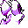

#033
Nidorino
Poison
An aggressive Pokémon that is quick to attack. The horn on its head secretes a powerful venom
Base stats Total 310
HP61
Attack72
Defense57
Speed65
Special55
Details
- Species
- Poison Pin
- Height
- 2'11"
- Weight
- 43.0 lb
- Catch rate
- 120
- Base exp
- 118
- Growth
- Medium Slow
Level-up moves
LevelMoveType
StartLeerNormal
StartTackleNormal
StartHorn AttackNormal
Lv 9Poison StingPoison
Lv 12Peck
Lv 16Double KickFighting
Lv 18Focus EnergyNormal
Lv 25AcidPoison
Lv 32CrunchDark
Lv 38Sludge BombPoison
Lv 39ToxicPoison
Where to find
TM / HM
TM06 ToxicTM08 Body SlamTM09 Take DownTM10 Double-EdgeTM11 BubblebeamTM12 Water GunTM13 Ice BeamTM14 BlizzardTM18 CounterTM24 ThunderboltTM25 ThunderTM28 DigTM31 MimicTM32 Double TeamTM33 ReflectTM34 BideTM40 Sludge BombTM44 RestTM50 SubstituteHM01 CutHM04 Strength